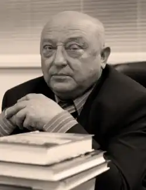

Корсак Іван Феодосійович – відомий український письменник, заслужений журналіст України.
Народився 15 вересня 1946 р. в селищі Заболоття Ратнівського району Волинської області Навчаючись у Заболоттівській середній школі, вперше пробував писати, як поетичні рядки так і прозу. Після закінчення школи вступив на агрономічний факультет Української сільськогосподарської академії, де навчався до 1969 р., одночасно працюючи робітником Заболоттівського деревообробного заводу.
Весною 1966 р. Іван Феодосійович прийшов кореспондентом у ратнівську районну газету. З грудня 1968 р. він працював у старовижівській газеті "Сільські новини". У 1973 р. Іван Феодосійович, вже маючи чималий досвід журналістської роботи, вступив на перший курс відділення журналістики ВПШ при ЦК КПУ. Навчався стаціонарно, співпрацював з українським телебаченням і радіо, готував цікаві репортажі. Подав ряд матеріалів, зокрема, про останнього лірника у селі Смоляри на Волині, до журналу "Народна творчість і етнографія". У 1975 році очолив районну газету Камінь-Каширщини "Радянське життя". Співпраця з Іваном Денисюком та Тамарою Борисюк дозволила дослідити поліські стежки Лесі Українки. Спільно з тодішнім директором Камінь-Каширського краєзнавчого музею, краєзнавцем Василем Кмецинським брав участь у дослідженні історії рідного краю. У 1990 р. І. Ф. Корсак став редактором газети Луцької міської ради "Народна трибуна" (1990–1995). Газета "Народна трибуна" з епіграфом "Вставай, хто живий, в кого думка повстала" – одне з перших видань демократичного напрямку на Волині, що мало республіканський статус. На шпальтах газети журналісти розкривали маловідомі, або свідомо замовчувані сторінки в історії краю. Крім того Іван Феодосійович – редактор однойменного радіо "Сім'я і дім". До його останніх здобутків належить запис аудіо збірника "Головне – погода в домі". Враження від життя, роздуми про нелегку долю простих людей, сільських трудівників Іван Феодосійович описував в своїх новелах. А з часом його заполонила історична тематика, біографії українських діячів. У 1990 р. вийшли дві книги оповідань "Тіні і полиски" та "Покруч". Третя книга "Оксамит нездавнених літ" побачила світ у 2002 р. У 2006 році вийшла друком книга "Гетьманич Орлик", в 2007 – "Імена, твої Україно", у 2008 – "Таємниця святого Арсенія", у 2009 – "Тиха правда Модеста Левицького". І. Ф. Корсак був активним діячем у громадському житті краю. Депутат Волинської обласної ради кількох скликань, у п'ятій каденції – голова постійної комісії з питань культури, духовності і ЗМІ. Він – лауреат премії ім. В. Чорновола 2007 р. (за книгу "Гетьманич Орлик"), премії імені Агатангела Кримського (за книгу "Імена твої, Україно", 2008 р. ), Міжнародної літературної премії імені Гоголя ("Тріумф", 2008 р.). Нагороджений Почесною грамотою Кабінету Міністрів України, орденом Архистратига Михаїла. Почесний громадянин міст Луцька і Каменя-Каширського. Помер 7 грудня 2017 року.